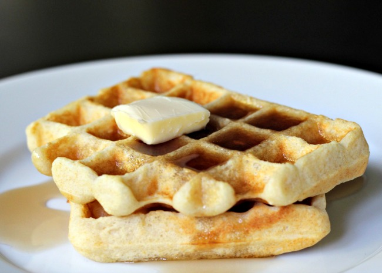

You can keep the batter covered in the fridge for up to a week. Just be sure to whisk well before using again. You may also use whole wheat flour for this recipe.
Can be serve at anytime to make you life sweat and forget the worries
Amazing desert to finish a nice dinner.
Ingredients
- 2 eggs
- 2 cups all-purpose flour
- 1¾ cups milk
- ½ cup vegetable oil
- 1 tablespoon white sugar
- 4 teaspoons baking powder
- ¼ teaspoon salt
- ½ teaspoon vanilla extract
Steps Directions
- Preheat waffle iron. Beat eggs in large bowl with hand beater until fluffy.
- Beat in flour, milk, vegetable oil, sugar, baking powder, salt and vanilla, just until smooth.
- Spray preheated waffle iron with non-stick cooking spray. Pour mix onto hot waffle iron. Cook until golden brown. Serve hot.
Nutrition facts
Per Serving: 382 calories; protein 8.7g; carbohydrates 38g; fat 21.6g; cholesterol 67.7mg; sodium 390mg.
Return to top
Return to HomePage